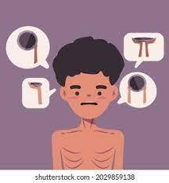

Malnutrition is a condition that arises when a person's body does not
receive enough nutrients, vitamins, and minerals required for normal growth, development, and
maintenance of healthy body tissues and functions. Malnutrition can either result from
undernutrition, where a person is not getting enough nutrients, or overnutrition, where a person
is consuming too many calories or nutrients but not in the right proportions.
Malnutrition can have a range of health consequences, including weakened immune systems,
stunted growth, impaired cognitive development, and an increased risk of disease and death. It
is a significant problem worldwide, affecting millions of people, particularly in low-income and
developing countries.

How ?
Limited access to nutritious foods: Rural areas may have limited access to a variety of nutritious foods, particularly fruits and vegetables. This can be due to factors such as poverty, limited transportation, and lack of availability of fresh produce in local markets. Lack of education about proper nutrition: People living in rural areas may not have access to education about proper nutrition, which can lead to poor dietary choices and malnutrition. Poverty and economic instability: Poverty and economic instability can limit access to food and contribute to malnutrition, particularly in vulnerable populations such as children and pregnant women. Limited healthcare services: Rural areas may have limited access to healthcare services, which can lead to undiagnosed health conditions that contribute to malnutrition.
Major Problems ?
Stunting: Malnutrition during the first 1,000 days of life, from conception to a child's second birthday, can lead to stunted growth. Stunting is a condition where a child's height is significantly below the average for their age group. Stunting is associated with increased risk of infection, delayed cognitive development, and decreased productivity later in life. Anemia: Anemia is a condition where a person's body does not have enough red blood cells to carry oxygen to the body's tissues. Anemia is often caused by a lack of iron in the diet and is prevalent in rural areas of India, particularly among women and children. Anemia can lead to fatigue, weakness, and decreased immune function. Vitamin A deficiency: Vitamin A deficiency is common in rural areas of India and can lead to a range of health problems, including vision problems, increased susceptibility to infections, and delayed growth and development. Vitamin A deficiency is particularly prevalent among young children and pregnant women, who may not have access to a variety of nutrient-rich foods
Solutions.
Improving access to nutritious foods: This can be done
by promoting local food systems and local
agriculture, providing subsidies for healthy foods, and improving food distribution
systems.
Additionally, promoting home gardens can help to improve access to nutritious foods.
Providing education on proper nutrition and hygiene: Educating people on the importance of a
balanced and nutritious diet, proper food storage, and hygiene practices can help to prevent
malnutrition. Health education programs can be implemented in schools, health clinics, and
community centers to promote healthy behaviors and improve health outcomes. Government policies: The Indian government can implement policies that focus on improving
nutrition outcomes, such as expanding food assistance programs and increasing investments in
rural healthcare and nutrition programs.